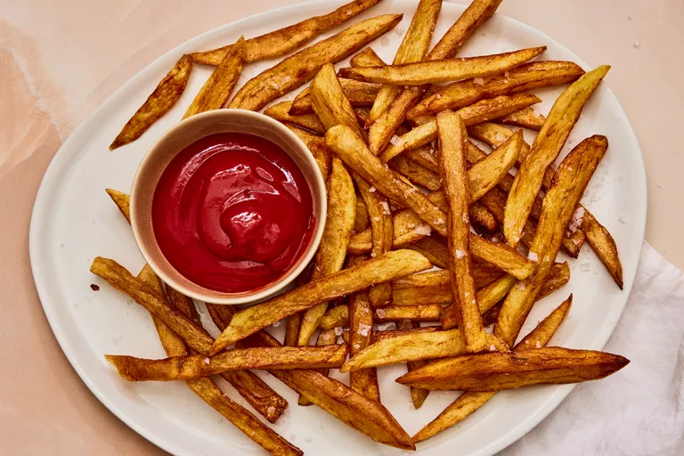

French Fried Potatoes

French Fried Potatoes
The best potatoes for French fries are soaked in a sugar
solution before frying. The sugar solution has something
to do with the carbohydrates and prevents the potatoes
from soaking up a lot of grease, so they get crunchy.
Ingredients
- cups warm water
- ⅓ cup white sugar
- 2 large russet potatoes - peeled, and sliced into 1/4 inch strips
- 6 cups vegetable oil for frying
Directions
- Gather all ingredients
- Stir together warm water and sugar in a medium bowl. Soak potatoes in water mixture for 15 minutes
- Remove potatoes from water and dry thoroughly on paper towels. Heat oil in a deep-fryer to 375 degrees F (190 degrees C)
- Cook potatoes in hot oil until golden, 5 to 6 minutes. Drain on paper towels and season with salt